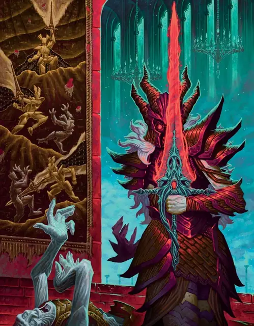

Чёрная Погибель
Ebonbane
Крошечный Конструкт, Хаотичный Злой, именной НИП

Класс Защиты 17 Инициатива +14 (24)
Хиты 130 (29к6 + 29)
Скорость 5 футов, Полёта 50 футов (парит)
| мод | спас | ||
|---|---|---|---|
| СИЛ | 18 | +4 | +4 |
| ЛОВ | 18 | +4 | +4 |
| ТЕЛ | 13 | +1 | +6 |
| мод | спас | ||
|---|---|---|---|
| ИНТ | 17 | +3 | +3 |
| МДР | 14 | +2 | +7 |
| ХАР | 19 | +4 | +4 |
Сопротивление урону Дробящий, Колющий, Рубящий, Огонь, Психический
Иммунитеты Некротический, Яд; Испуганный, Истощение, Оглохший, Окаменевший, Отравленный, Очарованный, Парализованный
Чувства пассивное Восприятие 17, Истинное зрение 120 футов
Языки Общий, Телепатия 10 фт.
Опасность 13 (10 000 опыта или 11 500 опыта в Домене; БВ +5)
Особенности
Восстановление Тёмной владычицы. Спустя 1к10 дней после смерти Чёрная Погибель возрождается с полными Хитами и телепортируется куда-то в поместье Шэдоуборн. До тех пор Чёрная Погибель — Длинный меч +3, когда её носит существо.
Легендарное сопротивление (3/день, или 4/день в Домене). Если Чёрная Погибель проваливает спасбросок, она вместо этого может в нём преуспеть.
Сопротивление магии. Чёрная Погибель совершает с Преимуществом спасброски от заклинаний и прочих магических эффектов.
Действия
Мультиатака. Чёрная Погибель совершает три атаки Порезом тёмного пламени. Она может заменить одну из этих атак использованием Одержимого мертвеца.
Порез тёмного пламени. Бросок рукопашной или дальнобойной атаки: +9, досягаемость 5 фт. или дальность 90 фт. Попадание: 9 (1к10 + 4) Рубящего урона плюс 10 (3к6) Некротического урона.
Одержимый мертвец (Перезарядка 5–6). Чёрная Погибель оживляет труп Гуманоида Среднего или Маленького размера в пределах 5 футов от себя, и он становится одержим ею. Труп управляется Чёрной Погибелью, носит её и использует её в качестве оружия. Чёрная Погибель получает 50 Временных хитов и сохраняет свою статистику с тем исключением, что её Скорость увеличивается до 30 футов и она может говорить устами трупа на любом языке, который тот знал при жизни.
Одержимость длится до тех пор, пока Хиты Чёрной Погибели не опустятся до 0 или пока Чёрная Погибель Бонусным действием не окончит её. После того как одержимость оканчивается, Чёрная Погибель не может овладеть этим трупом снова, и спустя 24 часа труп рассыпается прахом.
Достойный владелец. Спасбросок Харизмы: Сл 17, одно согласное существо в пределах 5 футов. Провал: 36 (8к8) Силового урона. Если этот урон опускает Хиты цели до 0, Чёрная Погибель пожирает её душу. Существо, чья душа была пожрана Чёрной Погибелью, может быть возвращено к жизни только заклинанием Желание. Успех: Существо Настраивается на Чёрную Погибель и может владеть ею в качестве оружия (см. Чёрная Погибель).
Реакции
Парирование. Условие: По Чёрной Погибели попали броском рукопашной атаки. Эффект: Чёрная Погибель получает бонус +5 к КЗ против этой атаки, что может привести к её промаху.
Легендарные действия
У этого существа есть 3 использования Легендарных действий (или 4 использования в Домене); оно может немедленно после окончания хода другого существа потратить одно использование, чтобы совершить одно из следующих действий. Существо восполняет все потраченные использования в начале каждого своего хода.
Ответный удар. Чёрная Погибель перемещается на расстояние вплоть до половины своей Скорости и совершает одну атаку Порезом тёмного пламени.
Рунная вспышка. Спасбросок Телосложения: Сл 17, все существа по выбору Чёрной Погибели в 30-футовой Эманации, исходящей от Чёрной Погибели. Провал: Цель Ослеплена и повторяет спасбросок в конце каждого своего хода, оканчивая этот эффект при успехе. Цель преуспевает в спасброске автоматически спустя 1 минуту. Провал или успех: Чёрная Погибель не может совершить это действие снова до начала своего следующего хода.
Бонус мастерства +5
Чёрная Погибель
Тёмная владычица бесконечного мщения
Чёрная Погибель — зловещий разумный клинок, что жаждет стереть с лица земли наследие величайшей героини Теневых земель и всех её союзников — всякого, кто носит имя Шэдоуборн, и каждого члена Круга.
Чёрная Погибель — Артефакт в виде длинного меча (см. Чёрная Погибель), но в стенах поместья Шэдоуборн она обретает способность передвигаться самостоятельно и действует как существо. За пределами поместья клинок не использует свою статистику — ему нужен носитель, чтобы вершить зло в мире.
Многие из тех, кто пытается настроиться на оружие, погибают на месте, сражённые его злобой. Те же, кому удаётся взять Чёрную Погибель в руки, вынуждены терпеть беспрестанные требования Тёмной владычицы и рискуют стать её пешкой. Потерявшись за пределами поместья Шэдоуборн, клинок всякий раз находит дорогу обратно. Никому не под силу вынести Чёрную Погибель из Теневых земель. Если кто-то попытается, меч просто исчезает и вновь появляется в поместье Шэдоуборн.
Характер у Чёрной Погибели театральный, она питает пристрастие ко всему драматичному и садистскому. Жизнь для неё ничего не стоит, и особенно она любит сперва оживлять трупы врагов, а затем уничтожать их на глазах у соратников. В речах она язвительно пародирует выспреннюю манеру странствующих рыцарей.
История Чёрной Погибели
Катери Шэдоуборн была великой героиней; всю жизнь она посвятила служению добру вместе с орденом доблестных рыцарей, звавшимся Кругом. Среди главных её подвигов — победа над армией королевства, чей король был одержим исчадием. Она одолела демона, но в той битве её волшебный меч разлетелся на куски.
Прожив жизнь, полную великих свершений, Катери Шэдоуборн удалилась на покой и поселилась с семьёй в поместье Шэдоуборн. Однако героиня нажила себе множество врагов. Решив, что она теперь уязвима, злобные культисты собрали осколки её сломанного меча и вызвали тлеющую злобу тех зол, которые она когда-то остановила. Всё это они выковали в ужасное оружие, Чёрную Погибель, — и сами стали его первыми жертвами.
Движимая ненавистью к Катери и её союзникам, Чёрная Погибель подчинила себе своих создателей и стала настоящим проклятием для всего мира. Годами она разрушала то, что построила Катери, губила тех, кого она любила, и убивала тех, кто ей помогал. Много раз владельцев злого меча ловили, но никому и в голову не приходило, что за кровавыми преступлениями стоит само оружие.
Наконец, попав в руки неприметного монаха, Чёрная Погибель оказалась в поместье Шэдоуборн, где мрачные вести отрезали Катери от мира и подточили её силы. Состарившаяся, но всё ещё могучая воительница распознала исходящую от клинка угрозу, — и разразилась великая битва. Пока длился бой, Катери отвлекала Чёрную Погибель на себя, чтобы её семья и друзья успели покинуть поместье. Когда же в зале остались лишь героиня и злой меч, Катери собрала остатки сил в последний удар, надеясь уничтожить Погибель. Но злое оружие оказалось слишком сильно. Меч Катери разлетелся вдребезги, и Чёрная Погибель сразила легендарную воительницу. Торжествуя победу, она вселилась в тело Катери и бросилась в погоню за её близкими, но увидела лишь, как беглецы исчезают в Туманах.
Когда Туманы рассеялись, Чёрная Погибель очутилась в краю, где жители почитали предков Катери Шэдоуборн и её рыцарей как героев. Погибель — в восторге от возможности продолжить кровавую жатву — попыталась покинуть поместье Шэдоуборн, но рядом не оказалось никого, кто вынес бы её за ворота. Ныне злобный клинок кипит от бессильной ярости, поджидая достойного носителя, который вынесет его в мир и поможет уничтожить всё доброе, что порождено трудами Катери.
Домен Чёрной Погибели
Теневые Земли, домен Чёрной Погибели, изменяются из-за её присутствия, что создаёт следующие эффекты:
• Закрытие границ. Когда Чёрная Погибель находится в домене, она способна по желанию закрывать или открывать границы Теневых Земель. Когда границы закрыты, Туманы вокруг Теневых Земель наполняются вихрями магических клинков. Существо, впервые за ход входящее в Туманы или начинающее в них свой ход, должно совершить спасбросок Ловкости Сл 15; при провале оно получает 16 (3к10) Силового урона. Существо совершает этот спасбросок лишь один раз в ход.
• Заколдованный лес. Лес в пределах 1 мили от логова Чёрной Погибели окутан могущественной иллюзией. Всякий раз, когда существо (кроме Чёрной Погибели или её союзников) завершает Короткий или Долгий отдых в этой области, оно должно преуспеть в спасброске Интеллекта Сл 15, иначе теряется в лесу, всякий раз возвращаясь туда, откуда начало. Это продолжается до тех пор, пока существо не завершит Короткий или Долгий отдых.
• Оживление мечей. Когда Чёрная Погибель находится в своём логове, она может превращать немагические двуручные и длинные мечи в пределах 1 мили от логова в Живые летающие мечи, проведя для этого 24-часовой ритуал.
Если Чёрная Погибель умирает, все эти эффекты мгновенно исчезают. Эффекты возникают вновь, если она возрождается (см. Восстановление Тёмной владычицы).